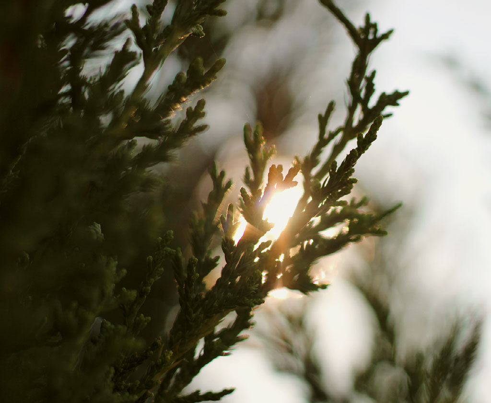

July 27, 2024--Sister Bay, WIJuly 27, 2024--Ridges Sanctuary, Bailey's Harbor, WISeptember 9, 2022--Sussex, WIJuly 26, 2024--Newport State Park, Door County, WISeptember 7, 2022--Sussex, WISeptember 26, 2020--Schlitz Audubon Nature Center, Bayside, WIMay 10, 2025--Como Park Zoo & Conservatory, Saint Paul, MN


 May 10, 2025--Como Park Zoo & Conservatory, Saint Paul, MN
May 10, 2025--Como Park Zoo & Conservatory, Saint Paul, MN